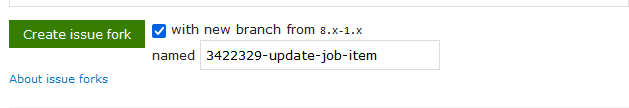

Drupal.org Workflows
About me
- Sascha Grossenbacher
- MD Systems (We're hiring!)
- https://drupal.org/u/berdir
- Entity system maintainer
- Contrib maintainer: TMGMT, Paragraphs, Token, Pathauto, Redirect, ...
- Contributing to Drupal since ~16 years
Topics
- Issues
- Patches & Merge Requests
- Gitlab CI
- Release Management
Disclaimer
- Personal opinions ahead
- Not all maintainers work in the same way
Issues
Overview
- Issues use nodes and comments
- The node holds the issue metadata, updated through comments
- Mostly used to track code changes, consider using Slack, Forums, Drupal Answers, ... for support
- Different rules for Drupal core vs. contributed projects
- Search for existing issues first
Title
- Short, compact description of the problem/feature
- Usually becomes the commit message if issue results in a code change
Priority
- Only change to Major/Critical according to the rules
- Importance of the issue to the project, not to you
- d.org/docs/develop/issues/fields-and-other-parts-of-an-issue/issue-priority-field
Status
- Active: New issue, no work done yet
- Needs review: Patch/MR ready for review/testing
- Needs work: Updates needed after testing/reviewing
- Fixed: Set by maintainer after committing. Automatically changed to Closed (Fixed) after 2 weeks
- d.org/docs/develop/issues/fields-and-other-parts-of-an-issue/issue-status-field
Version
- Always pick the development version/branch
- Contrib: Check project page when not sure
Version (Drupal Core)
- Development in 11.x branch (=main branch)
- As of a few days ago, 10.3.x now exists as a separate branch
- Almost every issue should still target 11.x, will first be committed there
Tags
- Only standardized, documented tags should be used
- Common are for example Needs X, like Needs tests
- drupal.org/node/3156530
Component
- Drupal Core has component maintainers, so picking a matching component is important.
- Sometimes hard to find a good component, others will improve if necessary
- Most contrib projects barely use components
Assignee
- Only maintainers can assign someone else than themselves
- Only assign to you if you are actively working on the issue, unassign when done
Issue summary
- Use the template as much as possible
- Most important: Problem/Motivation, Steps to reproduce for a bug and proposed resolution.
- Updating issue summary of a large issue with many comments is a useful contribution!
Useful (non-code) contributions
- Reproduce bugs, provide clear steps to reproduce when not provided
- Update issue summary
- Finding and reporting duplicates to prevent duplicate work
- Answer questions
Issues will move to Gitlab
Patches & Merge Requests
Patches
- Describe changes to source files
- Each patch contains full set of changes against the target branch
- Interdiff (diff between two patches) used to document incremental changes
Collaboration process with patches
- Patch uploaded as an issue comment
- Review posted with requested changes
- Updated patch + interdiff uploaded as a comment
- Repeat until committed
Uncommon aspects on drupal.org
- Very common that multiple developers contribute code to a single issue
- Custom tools like Dreditor
- Same basic workflow persisted for a very long time, while code versioning changed from CVS to Git to Gitlab
- High adoption of using patches in website projects (committed, drush make, composer patches)
Merge Requests (Pull Requests on Github)
- Slow shift to merge requests, soon enforced due to DrupalCI/GitlabCI changes
- Similar basic process, but more structured
- Based on a git branch (patch) and commits (interdiff)
- Standard contribution process for many open source projects
- Easier to learn for non-Drupal developer and non-developer contributors
Limitation of Merge requests
- Merge requests commonly assume a single developer/team
- Non-maintainers initiate process by creating a repository "fork" in their own name.
- Fork is owned by them, only they are commit
Merge requests on drupal.org
- Custom process developed for drupal.org: shared issue forks
- First contributor requests an issue fork. Everyone can gain access, automatically granted
- Gitlab is working on a similar concept called Community forks
Create issue fork
Issue Fork info

Issue Fork Commands

Using patches in your composer project
- https://github.com/cweagans/composer-patches
composer require cweagans/composer-patches
Recommended composer.json settings
"extra": {
"enable-patching": true,
"composer-exit-on-patch-failure": true,
"patchLevel": {
"drupal/core": "-p2"
},
"patches": {
"drupal/core": {
"ISSUE-NR: DESCRIPTION": "PATCH-URL-OR-FILENAME",
}
}
// OR
"patches-file": "composer.patches.json",
}
Merge requests as patches
curl -o patches/PROJECT-ISSUENR-description.patch \
https://../merge_requests/5636.diff
Important!
- Do NOT use MR.diff URL directly. Remote Code Execution!
- Use .diff, not .patch (patch is a list of commits in a single patch)
Work on a merge request in your project for a contrib module
composer reinstall drupal/PROJECT --prefer-source
cd web/modules/contrib/PROJECT
git remote add ...
git fetch ...
git checkout ...
...
git commit && push
# Open Merge request (verify target branch), update issue